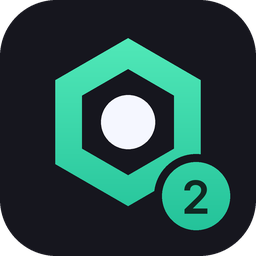
Play Clickteam Fusion games on a modern runtime: faster to start, lighter on memory, and on more platforms.
Latest release · Free and open source · Windows, Linux, Steam Deck, Android
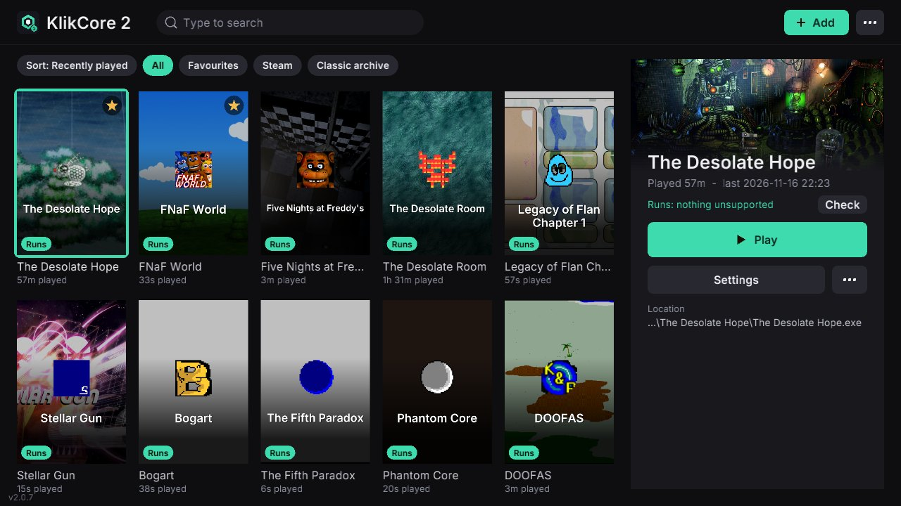
KlikCore is a clean-room runtime for games made with Clickteam Fusion 2.5 and Multimedia Fusion 1.5,
written from scratch in Rust. It reads a game's own .exe (or its data file) and runs it
directly, the way ScummVM does for old adventure games, so games that only ever shipped for Windows can
run natively on Linux, the Steam Deck and Android phones, with no Wine or Proton needed.
It comes with a launcher that keeps your library, makes desktop and Steam shortcuts, tracks play time, keeps your saves in sync between your devices and updates itself. KlikCore includes no game files: it plays copies of games you already have.
KlikCore 2 is the new name of Rekindle. On Android, install it alongside Rekindle and move your games over.
See the compatibility list for the games tested so far.
Add a game or a whole folder, play with one click, see time played, and make desktop shortcuts with each game's own icon.
Finds Clickteam games you installed through Steam and adds games to Steam as shortcuts, with their store artwork, or artwork made from the game.
Play keyboard-and-mouse games with a gamepad. KlikCore reads each game's own keys and puts them on your buttons, switches to a cursor on point-and-click screens, and works with Steam Input.
Borderless fullscreen on whichever monitor the game is on, upscaling filters including HD for drawn art and a pixel-art smoother, and fit, integer or stretch scaling, all set per game.
Pair your PC, Steam Deck and phone over your home network with a 6-digit code. Saves then sync on their own, encrypted, with backups of anything replaced, and games can be copied from one device to another.
The full launcher on your phone, with on-screen controls that appear only where a game needs the keyboard (point-and-click screens are played by tapping), and home-screen shortcuts for your games.
Bring your progress over from the original game, or send it back, in either direction, including older games' saves that Windows hides in VirtualStore. Anything replaced is backed up first.
Replace any image or sound by dropping files in a game's mods folder. The game files are never changed.
One click runs a game's art through Real-ESRGAN and saves it as an HD pack, drawn at your screen's resolution. Every image is checked against the original, and any the AI gets wrong keep their original art. A progress bar shows how long is left. The originals are untouched, and collisions still use them.
Sort and filter, star favourites, make collections, and see at a glance which games run fully. Screenshots, save snapshots and play stats for every game, and a TV mode for the couch.
Volume, display, upscaling and controller settings for each game, plus defaults for games you haven't set up and a launcher interface size that suits your screen.
Runs games from Multimedia Fusion 1.5 and, new in 2.0.5, Click & Create / The Games Factory, alongside Clickteam Fusion 2.5.
Your Discord status shows the game you're playing and for how long, with the game's icon for Steam games. One switch turns it off.
An overlay with frame rate, timings and memory, an inspector for any object on screen, adjustable game speed and one-key screenshots.
Games run side by side under Clickteam's own runtime and KlikCore with the same inputs, and every screen is compared, so differences get found and fixed.
Game data is read straight from disk and music is streamed, so games start fast and use less memory.
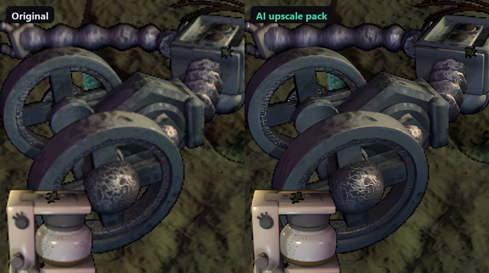
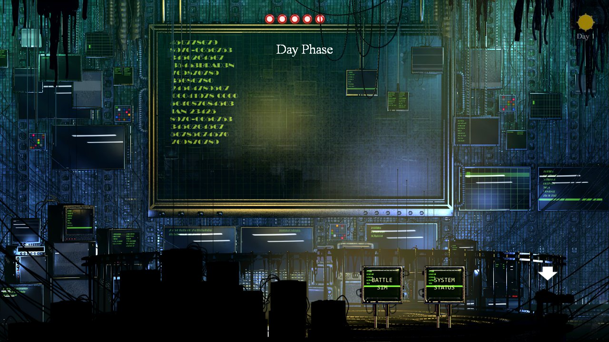
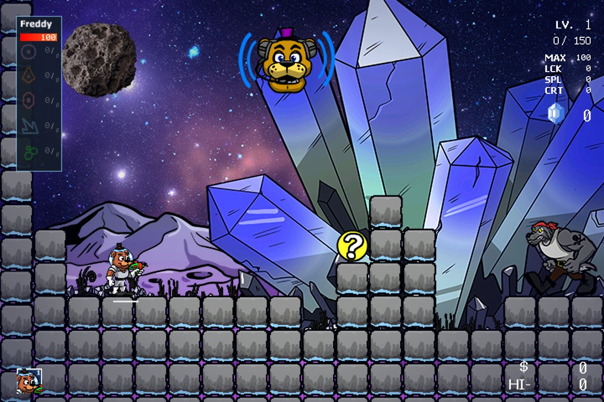
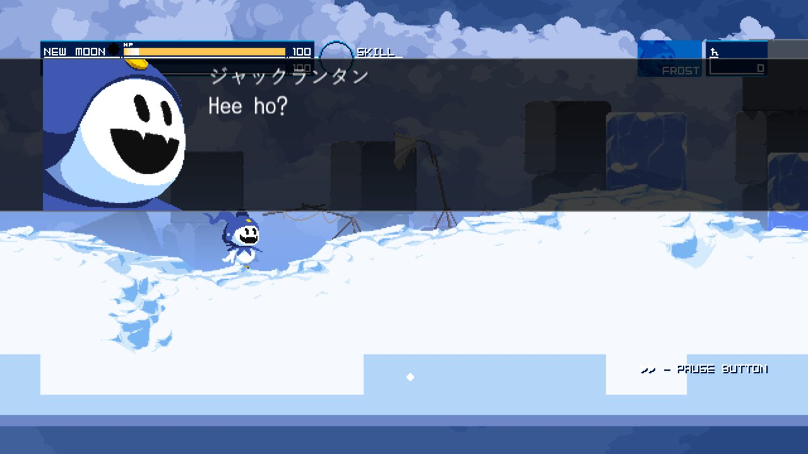
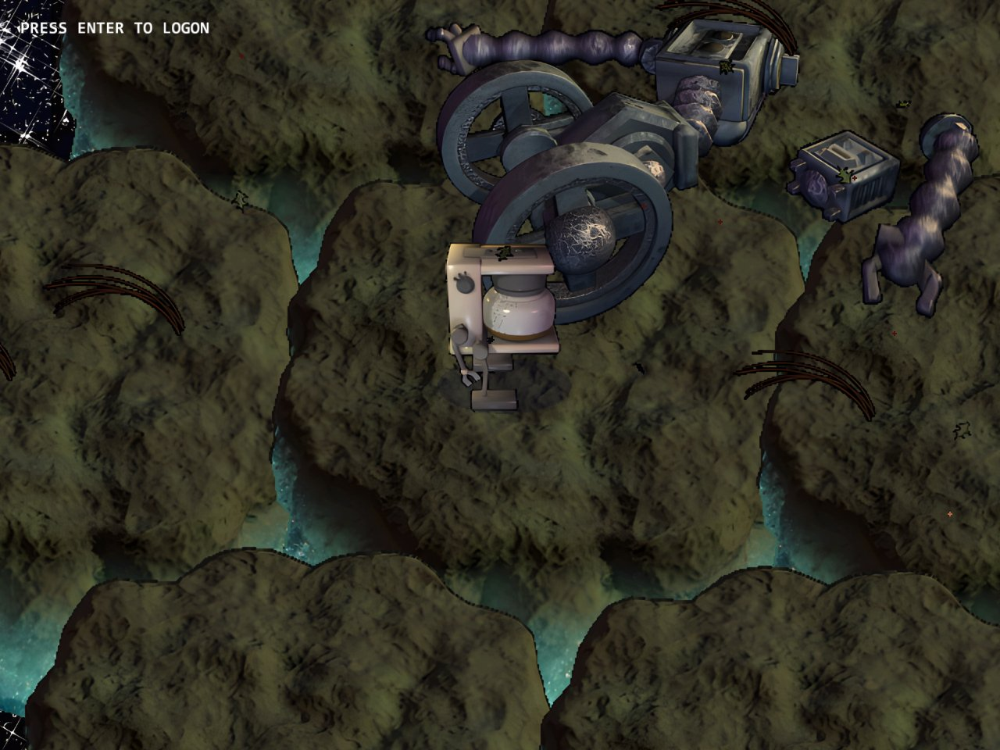
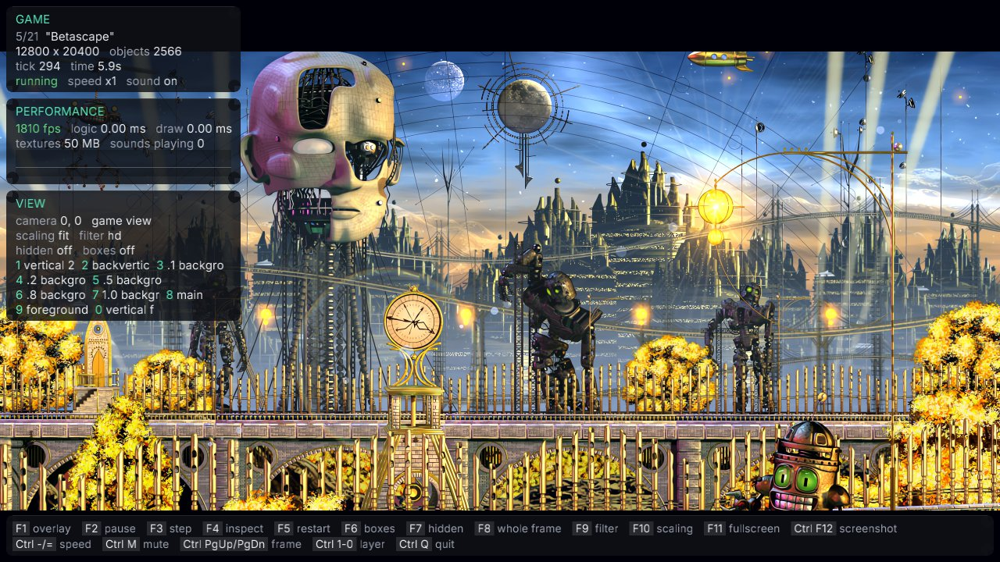
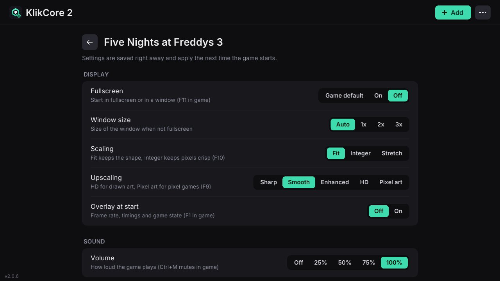
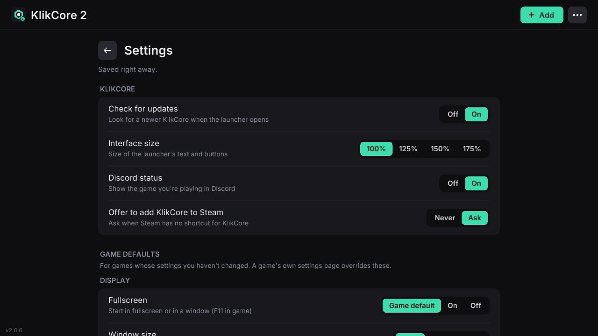
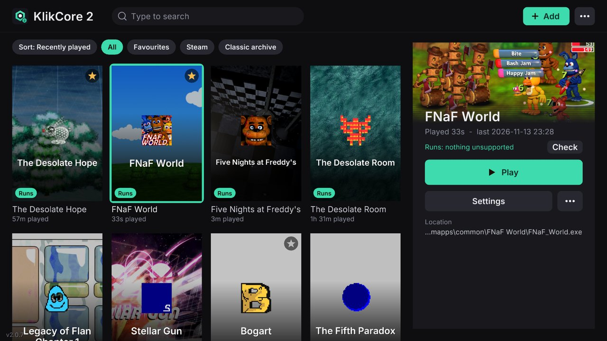
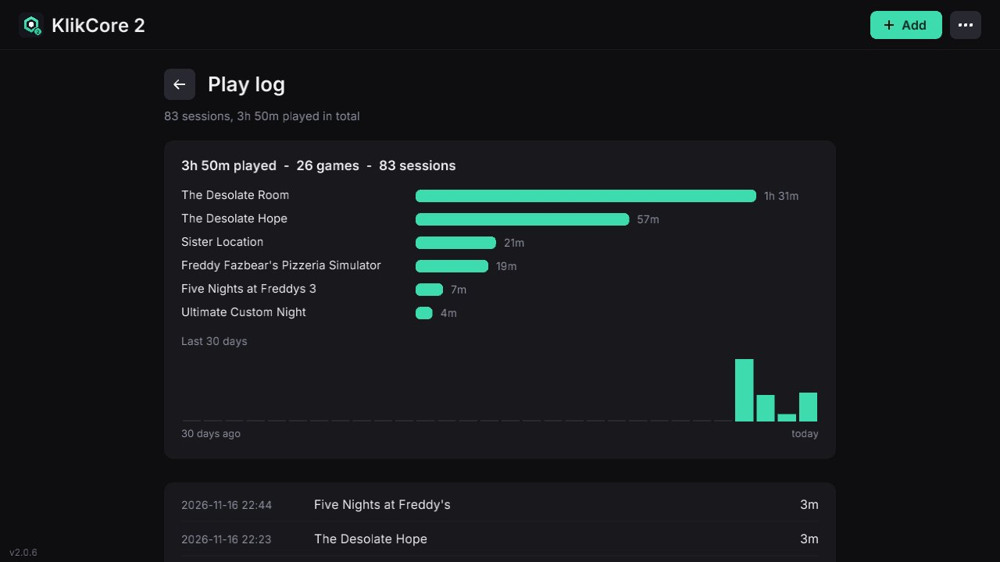
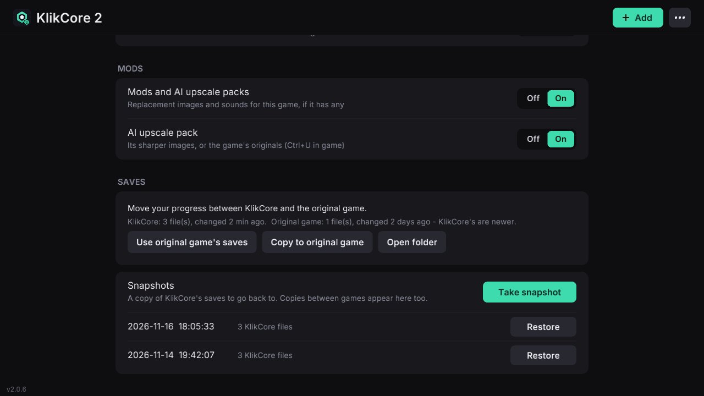
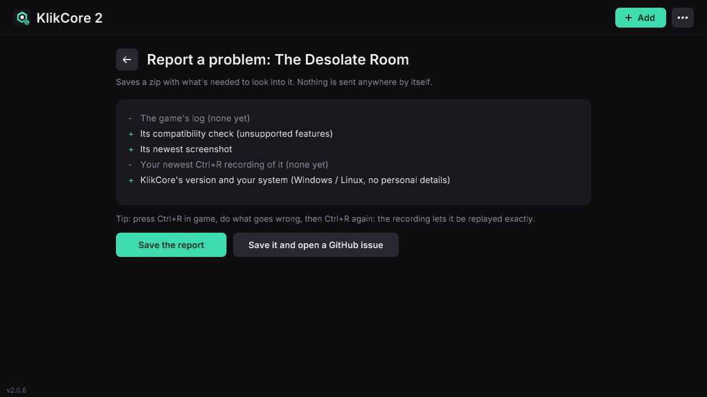
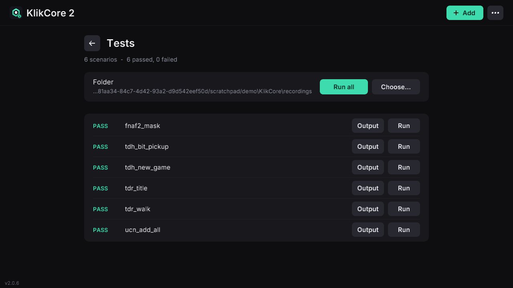
Each button downloads the newest release for that platform. The launcher updates itself after that.
In Desktop Mode: download, right-click → Properties → Permissions → "Is executable", then open it. KlikCore adds itself to Steam for Gaming Mode.
Download for Steam DeckAn AppImage that runs on most 64-bit distributions. Make it executable (chmod +x) and run it. Prefer a plain binary?
Android 7 or newer, 64-bit ARM (most phones from recent years). Open the download and allow installing from your browser when asked. KlikCore updates itself from then on (Android asks you to confirm). Get games onto the phone from your PC under Devices and sync.
Download for AndroidKlikCore is a free, independent project and is not affiliated with or endorsed by Clickteam. Clickteam Fusion and Multimedia Fusion are trademarks of their owners. Games remain the property of their creators; KlikCore includes none of their files.